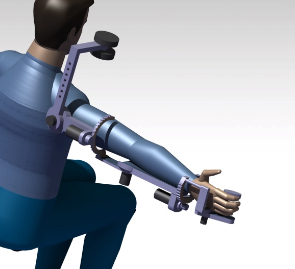
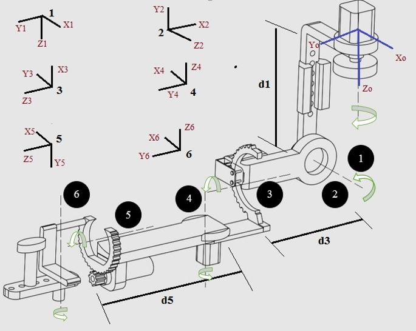
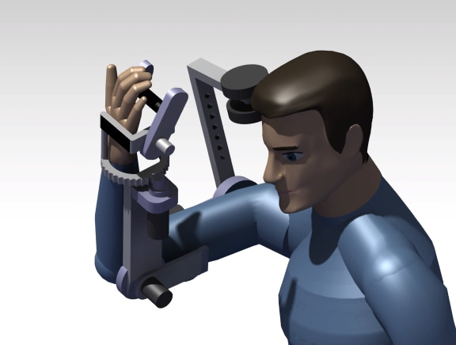

08 / CONCEPT PROJECT
Exoskeleton Rehabilitation Robot
A dexterous exoskeleton concept exploring robot-assisted upper-limb rehabilitation.

PROJECT OVERVIEW
Exploring assisted movement.
I presented this concept to the ICORD research facility at Vancouver General Hospital. It explores a possible upper-limb rehabilitation device for people with neurological movement difficulties.
The project is presented as a design concept, with renderings and supporting diagrams illustrating the proposed mechanism.
Project gallery


